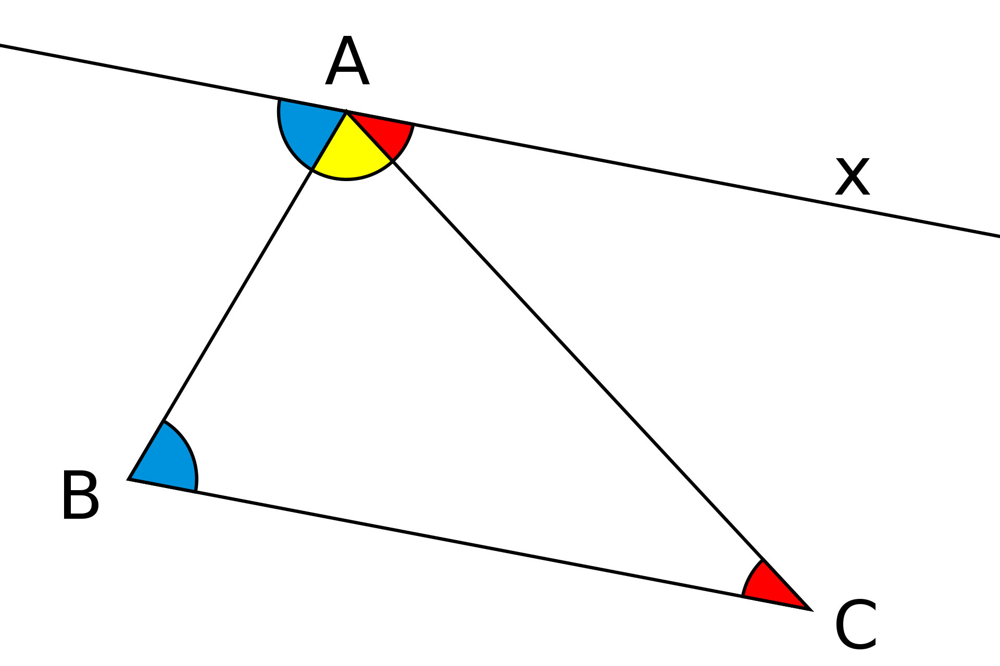
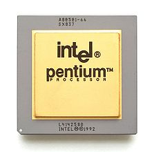
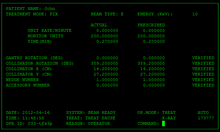
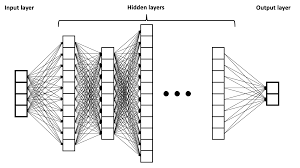

|
|
1997 |
| |
|
2017 |
|
|
? |
Whether?
When?
How?
|
- There is no world champion for mathematics - it is a collaborative endevaour.
- As is the quest to automate mathematics.
- Indeed, much of the progress is a by-product of people working towards other
goals.
- Converely, progress towards automating mathematics should lead to other
benefits.
- Especially helping mathematicians, students of mathematics and users of
mathematics.
- And making trains safer.
A proof: Sum of Angles in a Triangle
- Consider a triangle $ABC$.

- Draw a line through $A$ parallel to $BC$.
- Use equality of interior opposite angles.
- Use angles on a line add up to 180 degrees.
Another proof: infinitely many primes
- For any $n$, we show that there exists a prime $p$ such that $p > n$.
- Consider the number $n!+1$, where $n! = 1 \times 2 \times \dots \times n$.
- Let $p$ be the smallest prime factor of $n!+1$.
- If $p \leq n$ then $p | n!$ so $p \nmid n!+1$.
- Hence $p$ is a prime greater than $n$.
What went into the proofs
-
Auxiliary Constructions:
- the parallel line
- the term $n! + 1$.
-
Theorems/Definitions to use.
-
Deductions and Computations.
-
The theorems and definitions needed both knowledge of the precise statement
and the ability to recognize relevance.
Two systems for Thinking
Our thinking is based on two systems:
- System 1: Intuitive, Associative, Automatic.
- handles language, vision, other sensorimotor tasks.
- fast, but error prone.
- System 2: Analytical, Logical, Controlled.
- handles reasoning, planning, problem solving.
- slow, but accurate.
Moravec Paradox
- System 1 needs far more raw computational power than System 2.
- Our brain can perform about 100 trillion operations per second (about 100
Teraflops) according
to Moravec.
- Moravec predicted (in 1997) that computers will reach parity with this in 2040.
- Further, our brain's storage is about 100 terabytes.
- Another way to view this is that our accumulated knowledge, memory, experience,
learning etc is
stored in 100 trillion weights.
Why aren’t we supercomputers?
- A neuron completes between 1 and 200 operations in a second (laptop ≈ 3
billion).
- The 100 trillion operations per second the brain performs are massively
parallel.
- Logic/Algorithms often cannot be parallelized, e.g. long division.
- The clock speeds of computers have not increased much in the last 15 years,
speedups are by
parallelization,
especially with Graphics Processing Units (GPUs).
Computers today
- The NVIDIA A100 GPU delivers 312 Teraflops of performance.
- Renting this on Google cloud with this for an year (40 hours a week)
costs about the salary of a mathematician in India.
- On the other hand, the RAM on such a GPU is 40 GB; though we can scale this by
parallelization.
- The “accumulated knowledge” in the largest AI system (Google’s PaLM) is about
540 billion
weights, much less than our brain.
Ingredients for doing mathematics
- Accumulation of knowledge:
precise (System 2);
associations (System 1).
- Learning to learn (System 1/System 2).
- Computations and Deductions (System 2).
- Recognition of relevance (System 1).
- Constructions based on Analogy (System 1).
- Originality: going beyond the known (can be from System 1/System 2).
A concrete prediction
-
Open bet by Christian Szegedy, Google Research.
-
By the year 2029:
"A diverse set of 100 graduate text books are automatically formalized/verified in a popular
proof
assistant (eg Lean). 10% of problems from a preselected 100 open human conjectures is proved
completely autonomously."
Some computer-assisted proofs
- Four-colour problem: Any map can be coloured with at most
$4$
colours.
- Kepler conjecture: The most efficient way to pack spheres
is
the hexagonal close packing.
- Smale conjecture for hyperbolic $3$-manifolds.
- These proofs involved essentially a huge number of calculations of a single
type.
Robbins conjecture
- Robbins conjecture was a conjectural characterization of
Boolean algebras in
terms of
associativity and commutativity of $\vee$ and the Robbins equation
$\neg(\neg(a\vee b)\vee \neg(a \vee \neg b)) = a$.
- This was conjectured in the 1930s, and finally proved in 1996 using the
automated theorem prover EQP.
- This was a non-trivial proof by deduction, but where we knew the axioms with
which we start.
Boolean Pythagorean triples problem
- Problem: Is it possible to
colour
the
positive integers either red or blue, so that if three integers $a$, $b$, $c$,
satisfy $a^{2}+b^{2}=c^{2}$, they are not all the same colour?
- This was asked in the 1980s by Ronald Graham who offered a $100 prize.
- This was solved by Marijn Heule, Oliver Kullmann and Victor W. Marek in May
2016 using a SAT Solver,
a powerful deduction engine for finite problems.
Interactive Theorem Provers
- Interactive Theorem Provers are software systems where proofs are
obtained by human-machine
collaboration.
- The computer both finds (parts of) proofs and verifies
correctness.
- With interactive theorem provers, mathematics on a large scale can be digitied
(formalized) in a modular fashion, with the automation greatly facilitating this.
- Indeed the Lean Mathematical Library has most undergraduate
mathematics in it, and some advanced topics.
- As more mathematics is in such libraries, it becomes easier and more enjoyable to formalize even
more.
- Automation is also improving, which also facilitates formalization.
- Lean 4 is a programming language seamlessly integrated with an interactive
theorem prover, which (as we will see) helps with formalization and makes it useful in new ways.
- The main current application of Lean is to ensure a super-human
level of correctness.
- One hopes this is without super-human
effort.
Who guards the guards?
-
A computer verified proof is only as trustworthy as the system that verified the proof.
-
Following the de Bruijn principle, proofs are verified by a small
trusted
kernel, which can be thoroughly checked.
-
For example, the lean theorem prover has four (small) proof checkers written in
four languages.
-
In a specific case, one only has to check that the definitions and the
statement are correct, which is typically not hard especially if they use a
library.
The Liquid Tensor experiment
- In December 2020, Peter Scholze challenged the formalization community to
computer verify a foundational theorem of Condensed
Mathematics.
— with this theorem, the hope that the condensed formalism can be fruitfully applied to real
functional analysis stands or falls. I think the theorem is of utmost foundational importance,
so being 99.9% sure is not enough.
- This was taken up by the Lean community led by Johann Commelin, with active
collaboration from Scholze.
-
In about six months, a major step, Theorem 9.4 of Scholze's notes was proved.
-
Scholze said this was the part where he was worried about, and that he was now satisfied
that
the correctness of his result was checked.
-
About an year later, the origin goal, Theorem 9.1 was proved in Lean.
- Scholze said he understood aspects of his proof after the formalization which
he hadn't earlier.
Sums of reciprocals
-
In December 2021, Thomas Bloom proved that any set of natural numbers of positive upper
density
contains a finite subset whose reciprocals add up to $1$, answering a question of Erdős and
Graham.
-
While his paper was still under review, Thomas Bloom
learnt Lean, and,
along with Bhavik Mehta, formalized this theorem in Lean.
Kaplansky's Unit Conjecture
-
About an year ago, Giles Gardam disproved the long-standing Kaplansky's Unit
Conjecture, which asserted that group rings of torsion-free groups over fields
do
not have non-trivial units.
-
Gardam used a SAT solver to find such non-trivial units for a specific group and the field
$\mathbb{F}_2$.
-
Anand Rao Tadipatri and I formalized the proof in Lean 4 using its integration of programs and
proofs.
- As these examples show, the effort for formalization of mathematics is rapidly decreasing.
- Mathematics in Lean is much better organized than the human literature.
- Lean also has powerful automation, which helps formalization.
- All this paves the way (one hopes) for facilitating mathematical discovery.
Formal methods
Mathematical proofs elsewhere
Formal methods
- We specify (describe) software, hardware etc. in precise
mathematical terms.
- We give mathematical proofs of correct behavior, which are
computer
verified.
- This gives a much greater certainty of correctness.
- However, proofs are much harder than tests.
- Formal proofs use interactive theorem provers; with better provers we can
prove more often.
Do we need completely correct always?
|  |
Pentium FDIV Bug |
Fixing an error is very costly |
|  |
Therac 25 radiation machine |
Safety critical |
| |
WhatsApp Pegasus attack |
A bug is a vulnerability |
Some users of formal methods
| |
Intel Chips |
Fixing an error is very costly |
| |
Paris driverless metro |
Safety critical |
| |
Scala dotty compiler |
A bug is a vulnerability |
Steps towards
Artificial Intelligence
The common sense barrier
- We know a lot of things, on which we base common sense (according to
Marvin Minsky).
- Further, these pieces of knowledge are organized in a way that they can be
combined.
- Expert Systems have a lot of knowledge encoded as structured
data, functions,
algorithms.
- These are purely System 2, i.e., logical/algorithmic/rule-based systems.
- Besides knowledge and fast algorithms, we also need enough raw power.
Kasparov vs Deep Blue
- In 1997, a computer Deep Blue defeated the Chess world
champion Gary Kasparov.
- Deep Blue was an Expert system, based on elaborate rules for judging
strengths of positions.
- However, Deep Blue was very limited in certain
capabilities.
- Kasparov was far better at evaluating strengths of positions than Deep Blue,
and in knowing what moves are worth considering (System 1).
- Deep Blue compensated for this by being able to consider far more move
sequences.
The tacit knowledge barrier
- Tacit knowledge is the kind of knowledge that is difficult to
transfer to another person by
means of writing it down or verbalizing it.
- Examples: riding a bicycle, speaking a language; evaluating positions in chess.
- Tacit knowledge is much more important in the chinese game Go compared to Chess.
- Further, in Go the number of legal moves is much larger so brute force is less
effective.
- As a result, DeepBlue style expert systems are hopeless at Go.
Deep learning
- Computers can acquire knowledge by
learning.
- The idea of computers learning goes back at least to Turing, or even regression
in statistics.
-
What was needed was hardware and a system that could learn efficiently: Deep neural
networks.
- In a deep neural network the input is transformed into the output through a
series of
layers.
- Each layer is typically a linear transformation, depending on weights, followed
by a simple
non-linear function.

- Starting about 2012, deep neural networks performed very well in image
processing tasks, far
above rule-based systems.
-
It turns out that as the image is processed by successive layers, the raw data gets modified
to capture abstraction/meaning.
Limitations (≈ 10 years ago)
- Needed labelled data for training.
- Narrow: training specific to the task.
- Had difficulty with long range dependencies, in particular language.
- Hard to scale up, parallelize.
- Could not go beyond training data.
Representation Learning
-
In Word2Vec we set up the problem of predicting a word given its neighbours.
-
We look for solutions of this problem that involve mapping words into space, and predicting
from neighbours using the points.
-
We then retain only the mapping of words into space, so geometry captures
associations.
-
Another lesson is that it is useful to solve synthetic problems: play, solving exercises.
Transfer learning
- A set of common layers was used for many tasks.
- Some of the tasks could be synthetic (exercises).
- This resulted in networks trained for one task needing much less training for a
related task.
AlphaGo vs Lee Sedol
- In March 2016, a Go playing system AlphaGo defeated 18-time world
champion Lee Sedol.
- In January 2017, AlphaGo defeated the world number one Ke Jie
comprehensively.
- The strategy of AlphaGo was based on
- A policy function - what moves to consider.
- A value function - how good a position is.
- Given these, Go was played using a search through possible moves suggested by
policy.
AlphaGo and Learning
- The policy and value
functions of AlphaGo are deep neural networks
that were trained.
- The policy network was initially trained by learning to predict the next
move from games of expert players (behaviour cloning).
- The value network was trained by AlphaGo playing against
itself: Reinforcement Learning.
- AlphaGo considered fewer sequences of moves than Deep Blue.
- AlphaGo came up with unexpected moves.
AlphaGo Zero and Alpha Zero
- AlphaGo was succeeded (and defeated) by AlphaGo Zero, which learnt
purely by
self play.
- Its successor, AlphaZero, could master a variety of similar games
starting with
just the rules.
- AlphaZero took just 4 hours to become the strongest chess player on the
planet
(beating a traditional chess program, Stockfish).
- AlphaZero “had a dynamic, open style”, and “prioritizes
piece
activity over material, preferring positions that looked risky and aggressive.”
“Attention is all you need”
- The meaning of a word depends on the context, i.e., other words surrounding it.
- In the transformer architecture, this is captured by learning
to which other
words to pay attention.
- This allowed parallelization and captured long-range dependencies.
- Transformers are used in AlphaFold 2 which predicts protein
structures on par with experiments.
Foundation Models
- With the transformer architecture training could be scaled up enormously.
- It was found that models kept improving as the number of parameters grew (when trained on huge datasets).
- Huge models such as GPT-3 and PaLM have been trained on essentially all of the
internet, either by trying to predict the next word or by trying to fill in masked out parts.
- Applications: Dall-E 2, ChatGPT etc., have become sensations.
-
We have computer systems highly capable in:
|
Intuition |
Precise Reasoning |
| Scalability |
ChatGPT |
Lean Prover |
| Originality |
AlphaZero |
SAT Solvers |
- Yet they can get much better.
-
More importantly, must make them work together,
- while doing mathematics and while learning,
- with each other and with us.
{kind=link}